Editorial drafts: fact and subject-matter review are still required before any of these are published.
英文文章素材包
共 13 篇。点开任意一篇可在本地直接预览；本页只在仓库内查看用，图片直接引用 content/ 下的原图，不随下载包分发。
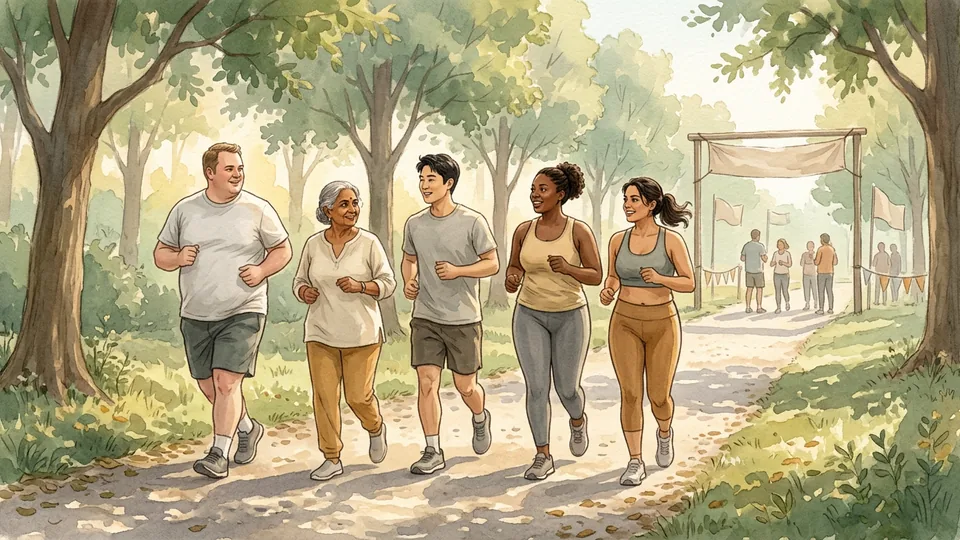
How to Run Your First 5K
Sports and Fitness
15 steps · 16 illustrations
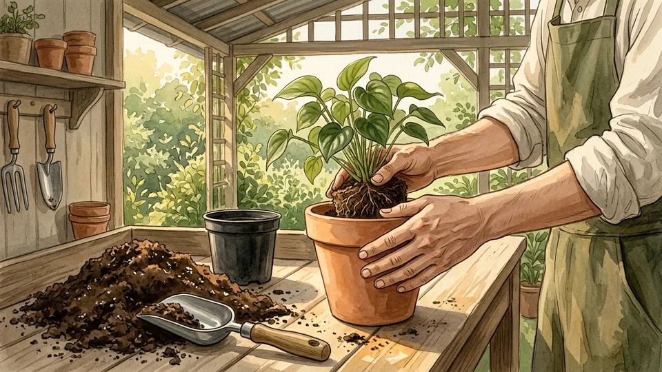
How to Repot a Houseplant
Home and Garden
15 steps · 16 illustrations
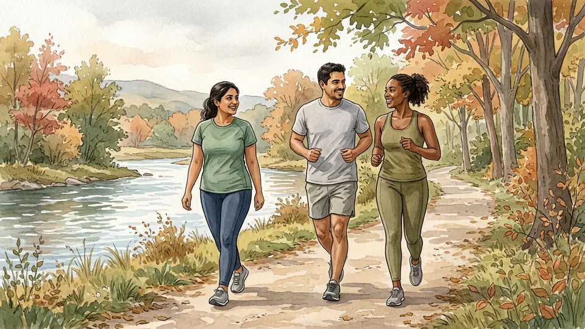
How to Plan a Run-Walk Workout
Sports and Fitness
15 steps · 16 illustrations
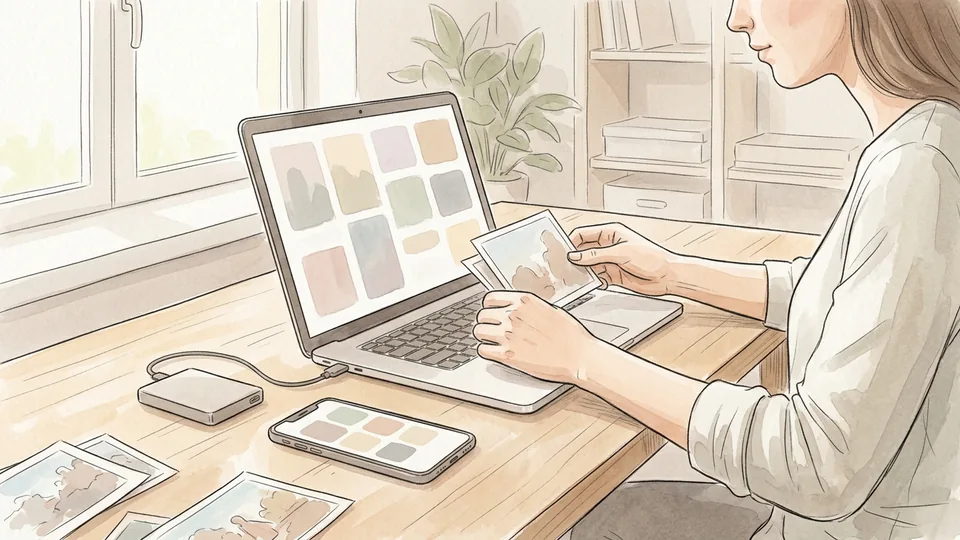
How to Back Up Your Photos
Computers and Electronics
15 steps · 16 illustrations
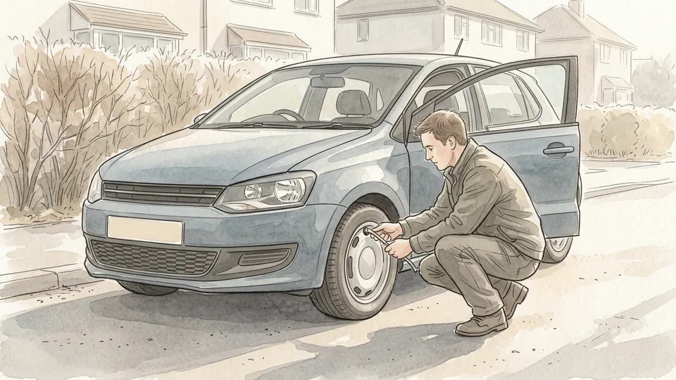
How to Check Your Tire Pressure
Cars and Other Vehicles
15 steps · 16 illustrations
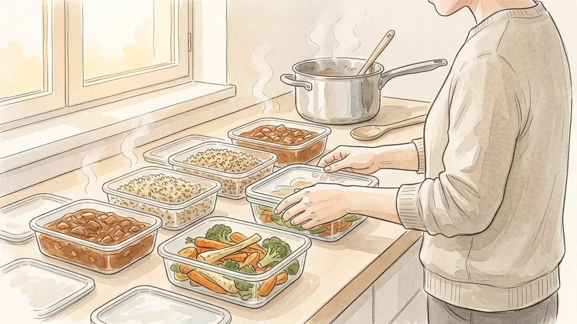
How to Meal Prep Safely for the Week
Food and Entertaining
15 steps · 16 illustrations
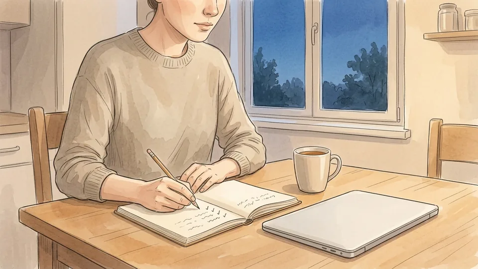
How to Build an Emergency Fund
Finance and Business
15 steps · 16 illustrations
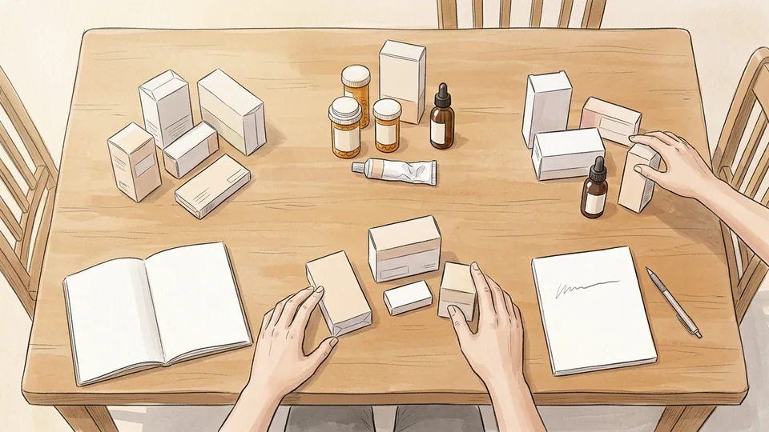
How to Organize Medicines Safely at Home
Health
15 steps · 16 illustrations
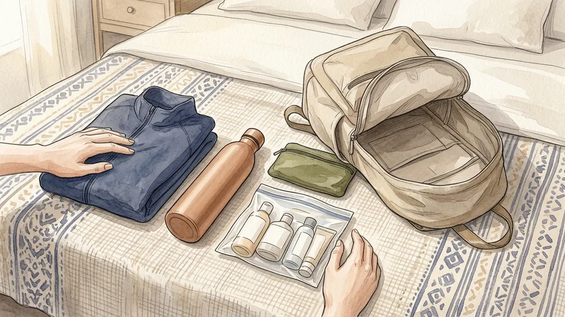
How to Pack a Personal Item for a Trip
Travel
15 steps · 16 illustrations
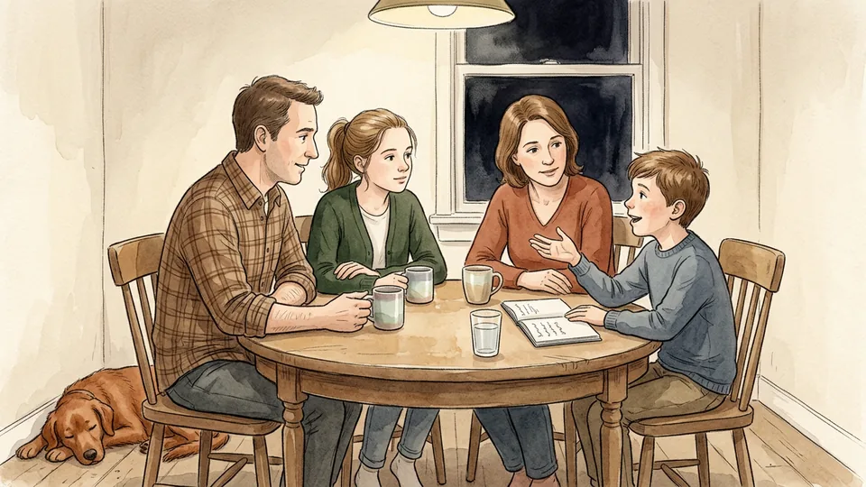
How to Hold a Family Meeting
Family Life
15 steps · 16 illustrations
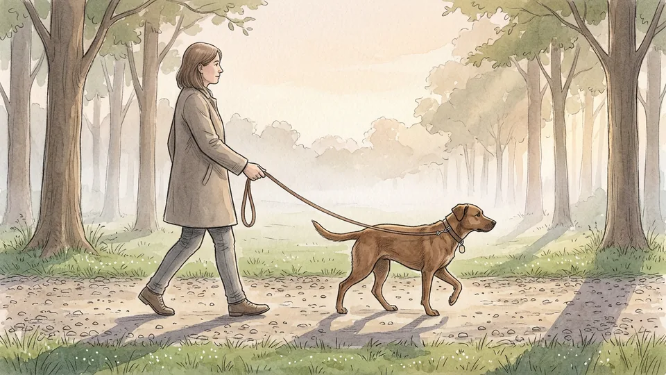
How to Build a Dog Walking Routine
Pets and Animals
15 steps · 16 illustrations
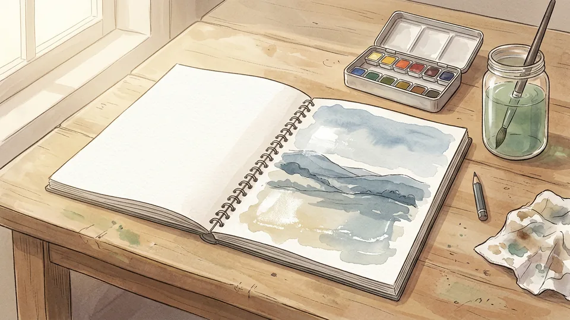
How to Begin a Watercolor Sketchbook
Hobbies and Crafts
15 steps · 16 illustrations
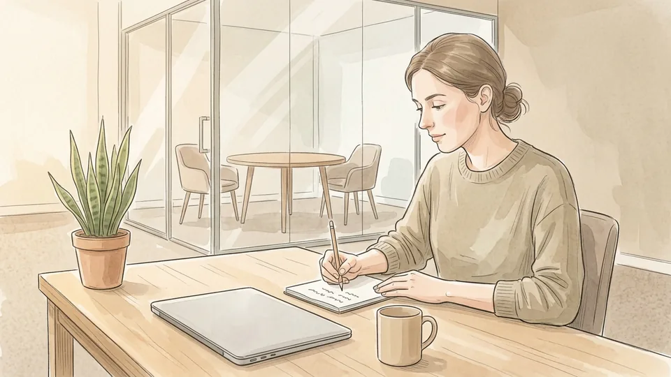
How to Prepare for a One-on-One Meeting
Work World
15 steps · 16 illustrations